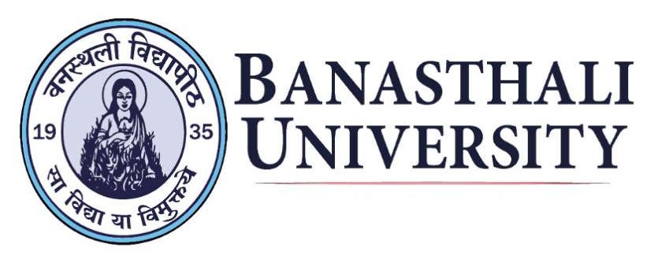

About Us |
Academics |
Research |
Campus & Facilities |
School Education |
Admissions
News & Events
International
Careers
Placements
Alumni
Contact Us
Login Hub
Video
PANCHMUKHI SHIKSHA
The Five-fold activity attempts a balance among hte five necessary aspects of education: Physical, Practical, Aesthetic, Moral and Intellectual.
WATCH NOW👀